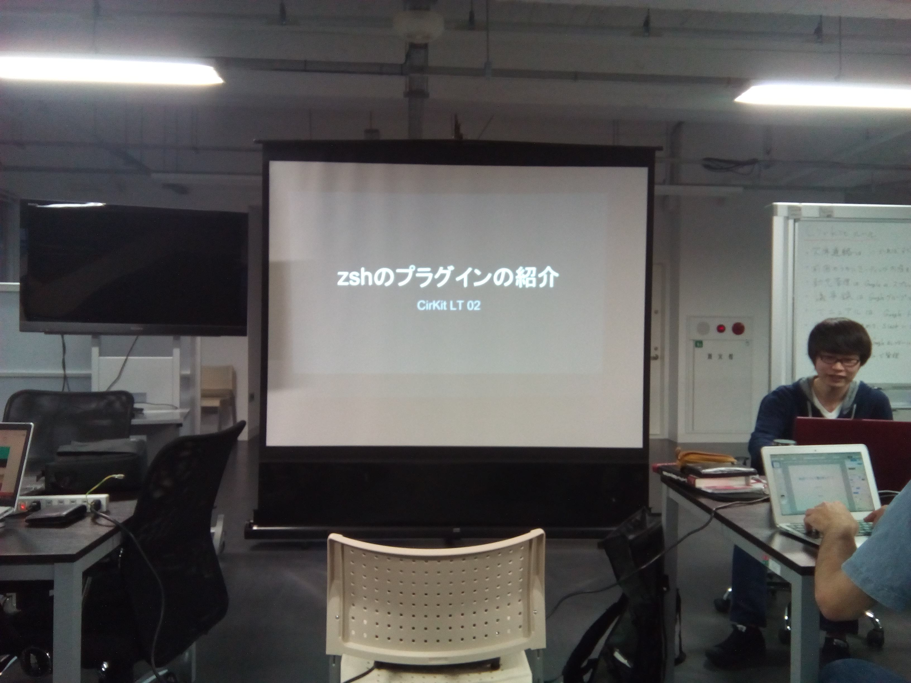
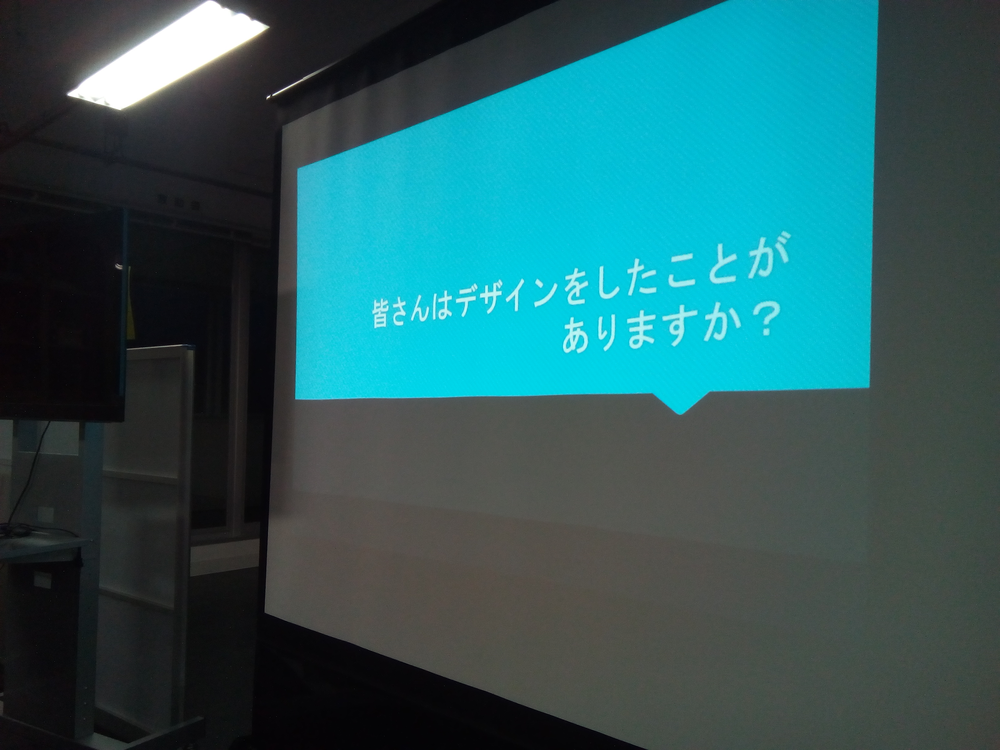
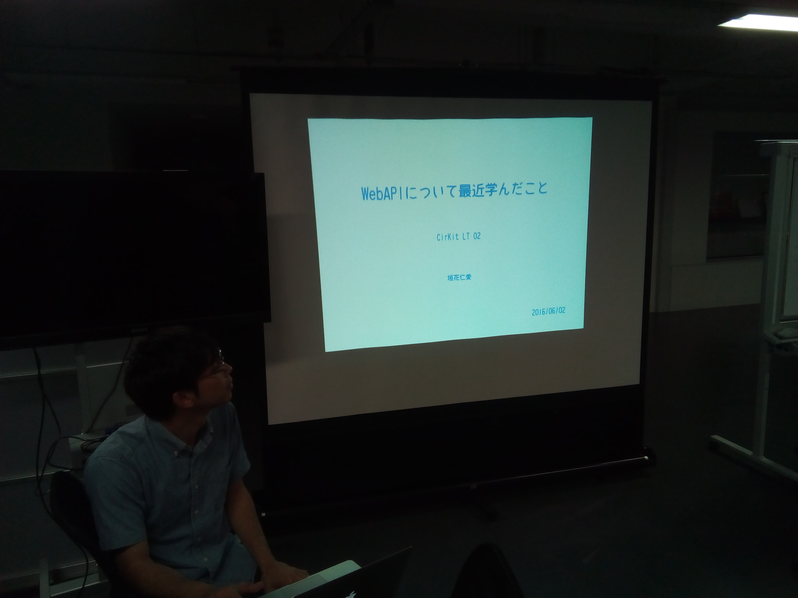
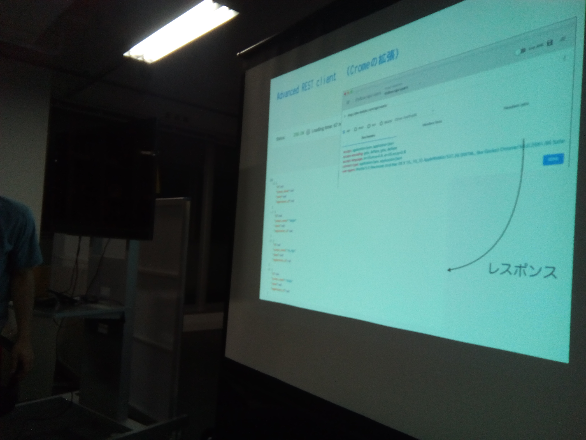

第2回CirKitシステムLT会開催しました！
どうも@y_temp4です。 ちょっと遅れてしまいましたが、第2回LT回をやったのでログを残しておきます。
発表内容
- zshプラグインの紹介 - いつもの人
- モダンなRails開発環境を求めてJSのエコシステムに触れる - @y_temp4
- WebAPIについて最近学んだこと - 垣花仁愛
- 非デザイナーが送る、非デザイナー向けデザイン教室 - 近藤豊峰
1. zshプラグインの紹介
シェルをこよなく愛する人が、布教活動のために行ったLTです。 自分はここであえてfishをオススメしておきます（使ってないけど）。
2. モダンなRails開発環境を求めてJSのエコシステムに触れる
これは自分のやつですね。 新メンバーも入ったということで、たまにはスライドの趣向を変えてみました。 作っていて楽しかったです。
3. WebAPIについて最近学んだこと
API、自分もつくりたい。。 普段は利用者になることが多いですが、作る立場に立つことも重要かと思います。 Web API: The Good Partsは 必読そうですね…。
4. 非デザイナーが送る、非デザイナー向けデザイン教室
デザインは難しいですが、自分もセンスではないと思います。 最後にフォントの質問がありましたが、CirKitはフォントにうるさい先輩が 多いので気をつけたほうがいいと思います。
様子
例によってLTの様子を…。     写真、暗いけど許してください (^q^)
次回は未定ですが、今のペースだとちょい頻繁だと思うので 少し空きそうです。